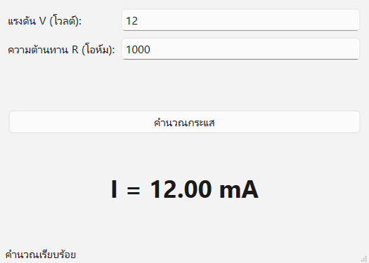
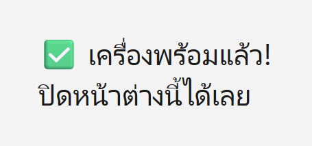
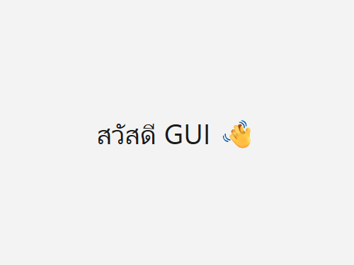
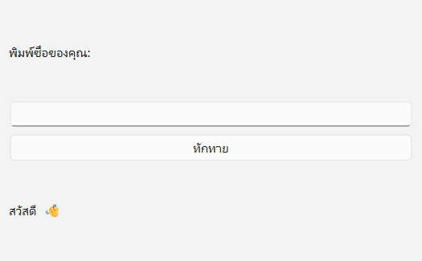
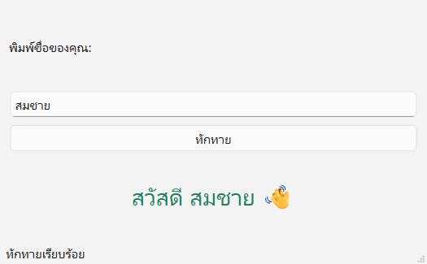
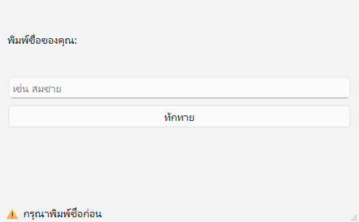
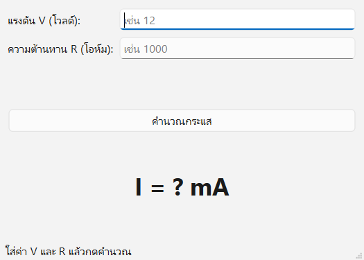

GUI ตัวแรก
กับผู้ช่วย AI 🤖

ทำโปรแกรมหน้าจอได้เอง 3 ตัว
หน้าต่างแรก
เปิดโปรแกรมที่มี
หน้าต่างของเราเอง
โปรแกรมทักทาย
พิมพ์ชื่อ กดปุ่ม
แล้วโปรแกรมตอบกลับ
เครื่องคิดเลขโอห์ม
ใส่ V กับ R
ได้กระแส I ทันที
และที่สำคัญกว่าโค้ด: สั่งงาน AI เป็น · อ่านโค้ดออก · ทดสอบเป็น
วันนี้เราทำอะไรบ้าง
| เวลา | ช่วง | เราทำอะไร |
|---|---|---|
| 0:00–0:15 | เปิดคาบ | 📱 แบบทดสอบก่อนเรียน |
| 0:15–0:35 | GUI คืออะไร | 🙋 โหวต · ☁️ word cloud · 🎬 คลิป |
| 0:35–1:15 | Lab 0 ติดตั้งเครื่องมือ | 💻 Python · VS Code · PySide6 · AI → 📷 จุดตรวจ 1 |
| 1:15–1:35 | ทำงานกับ AI 7 ขั้น | 🎮 เกม AI จริงหรือมั่ว |
| 1:35–2:10 | Lab 1 หน้าต่างแรก | 💬 เขียน prompt · 🏷️ ติดป้ายโค้ด → 📷 จุดตรวจ 2 |
| 2:10–2:20 | พัก | ☕ |
| 2:20–3:20 | ศัพท์ widget + Lab 2 | ✏️ วาดหน้าจอ · 👋 โปรแกรมทักทาย → 📷 จุดตรวจ 3 |
| 3:20–3:40 | คลินิกบั๊ก | 🔍 อ่าน error 4 แบบ |
| 3:40–4:25 | ภารกิจโอห์ม | ⚡ ทำเอง ทดสอบเอง → 📷 จุดตรวจ 4 |
| 4:25–5:00 | ฝึก + สรุป | ✏️ แบบฝึกหัด · 📱 แบบทดสอบหลังเรียน |
เทคนิคการอินเตอร์เฟซ (Interface Techniques)
30105-2004
ปวส. สาขา
เทคโนโลยีอิเล็กทรอนิกส์
ท 2 · ป 3
5 ชม./สัปดาห์
3 หน่วยกิต · 15 สัปดาห์
ปลายทาง
โปรแกรม GUI
แสดงข้อมูลแบบแดชบอร์ด
ผลลัพธ์รายวิชา: เขียนโปรแกรมสร้างส่วนติดต่อผู้ใช้งานแบบกราฟิก เพื่อแสดงผลข้อมูลในรูปแบบแดชบอร์ด
ทุกโปรแกรม GUI มีโครงเหมือนกัน
- โปรแกรม GUI = แอป (QApplication) + หน้าต่าง + widget ที่จัดวางด้วย layout
- โปรแกรมไม่ได้ทำงานจากบนลงล่างแล้วจบ แต่ รอผู้ใช้ กด/พิมพ์ (event loop)
- ใช้ AI ช่วยเขียนได้ แต่ เราต้องเป็นคนกำหนดสเปก อ่าน ทดสอบ และรับผิดชอบโค้ด
สร้างและจัดวางวิดเจ็ตพื้นฐานสำหรับส่วนติดต่อผู้ใช้งาน
- อธิบายสถาปัตยกรรมโปรแกรม GUI และโครงสร้างหน้าต่างหลักได้
- ติดตั้งไลบรารีพัฒนา GUI (Python + PySide6) และเครื่องมือได้ถูกต้อง
- เขียนโปรแกรมสร้างหน้าต่างและ widget พื้นฐาน (Label, LineEdit, Button) โดยใช้ AI ช่วยได้
- ทดสอบการทำงานของ widget และแก้ข้อผิดพลาดจาก Traceback ได้
- ปฏิบัติงานด้วยความละเอียด รอบคอบ ซื่อสัตย์ และใช้ AI อย่างรับผิดชอบ
กติกาห้องแล็บของเรา
💻 เครื่องคอม
- เก็บงานในโฟลเดอร์
C:\gui-lab - ตั้งชื่อไฟล์ภาษาอังกฤษ ไม่เว้นวรรค
- เสร็จแล้วส่งงานใน Google Classroom
🤖 ใช้ AI
- ใช้ได้เต็มที่ แต่ต้องอธิบายโค้ดได้
- ห้ามใส่ข้อมูลส่วนตัวใน prompt
- ครูจะสุ่มถาม “บรรทัดนี้ทำอะไร”
ยังไม่รู้ก็ไม่เป็นไร ตอบตามที่คิด!
เปิด แบบทดสอบ → เลือก “ก่อนเรียน” → ทำ 20 ข้อ → กดส่ง
quiz.html (ลิงก์อยู่ในหน้าแรกของวิชา)
GUI คืออะไร
ทำไมช่างอิเล็กฯ ต้องทำเป็น
หน้าจอที่ “กด ๆ จิ้ม ๆ” ได้ คือสิ่งที่เราจะสร้างทั้งเทอม
พิมพ์คำสั่ง (CLI) vs กดบนหน้าจอ (GUI)
PS C:\gui-lab> python ohm.py ใส่แรงดัน (V): 12 ใส่ความต้านทาน (Ω): 1000 กระแส = 12.0 mA
CLI = Command Line Interface
พิมพ์ตอบทีละบรรทัด
GUI = Graphical User Interface
มีช่องกรอก ปุ่ม ข้อความ ใช้เมาส์ได้
วันนี้เราแตะ GUI ไปกี่ครั้งแล้ว?
ตู้ ATM
ปุ่ม เมนู
ช่องใส่จำนวนเงิน
แอปธนาคาร
สแกนจ่าย
ดูยอดเงิน
จอเครื่องพิมพ์ 3D
เลือกไฟล์
ดูอุณหภูมิหัวฉีด
Serial Plotter
กราฟค่าจากเซนเซอร์
บน Arduino IDE
งานช่างอิเล็กฯ: เครื่องวัด เครื่องจักร หุ่นยนต์ ล้วนต้องมีหน้าจอให้คนสั่งงาน
ข้อไหน ไม่ใช่ GUI?
ระหว่างดู สังเกต:
- GUI ต่างจากพิมพ์คำสั่งยังไง
- มีชิ้นส่วนอะไรบ้าง (ปุ่ม เมนู…)
โปรแกรมในงานช่างที่เคยใช้ แล้วมี “หน้าจอ” คืออะไร?
เช่น Arduino IDE, โปรแกรมวาดวงจร, แอปมัลติมิเตอร์… คำที่ตอบตรงกันจะตัวใหญ่ขึ้น
แดชบอร์ดอ่านค่าเซนเซอร์แบบสด ๆ
- รับค่าจากบอร์ด/เซนเซอร์
- โชว์เป็นตัวเลข + กราฟ
- กดปุ่มสั่งงานกลับไปที่บอร์ด
7 หน่วย ทีละขั้น สู่แดชบอร์ด
| สัปดาห์ | หน่วยการเรียนรู้ | ได้ทักษะ |
|---|---|---|
| 1–2 | 1 สร้างและจัดวางวิดเจ็ตพื้นฐาน | หน้าต่าง ปุ่ม ช่องกรอก layout |
| 3–4 | 2 ออกแบบด้วย Qt Designer | ลากวางหน้าจอ แล้วต่อกับโค้ด |
| 5–6 | 3 จัดการเหตุการณ์ อินพุตเอาต์พุต | signal/slot ตรวจค่า แจ้งเตือน |
| 7–8 | 4 สื่อสารพอร์ตอนุกรมและเครือข่าย | UART · TCP · HTTP · JSON |
| 9–10 | 5 MQTT และ CoAP กับบอร์ด | รับค่าเซนเซอร์ สั่งงานบอร์ด |
| 11–12 | 6 แสดงผลกราฟและแดชบอร์ด | กราฟเรียลไทม์ |
| 13–14 | 7 ประยุกต์และทดสอบแบบเบ็ดเสร็จ | งานชิ้นใหญ่ของเรา |
| 15 | ประเมินผลลัพธ์การเรียนรู้ระดับรายวิชา | |
4 อย่างที่ต้องมีในเครื่อง
Python
ภาษาที่ใช้เขียน
อ่านง่าย คนใช้เยอะ
PySide6
ชุดชิ้นส่วนหน้าจอ
(Qt สำหรับ Python)
VS Code
โปรแกรมเขียนโค้ด
(หรือ Antigravity)
ผู้ช่วย AI
Copilot ใน VS Code
หรือแชต AI บนเว็บ
เสริม PySide6 คือไลบรารี Qt ตัวทางการของบริษัท Qt ฟรี ใช้ได้ทั้ง Windows, macOS, Linux [3] [4]
เขียนโค้ดยุค AI
เราคือหัวหน้างาน
AI พิมพ์เร็ว แต่คนที่รู้ว่า “ต้องการอะไร” และ “ถูกหรือยัง” คือเรา
นักพัฒนาทั่วโลกใช้ AI กันแค่ไหน?
ใช้หรือกำลังจะใช้
AI ในการพัฒนาโปรแกรม
ใช้ทุกวัน
(นักพัฒนามืออาชีพ)
ไม่ไว้ใจความถูกต้อง
มากกว่าคนที่ไว้ใจ (33%)
สรุป: ทุกคนใช้ AI แต่มือโปรไม่เชื่อ AI ทันที ต้องตรวจก่อนเสมอ
คุยกัน:
- AI จะมาแทนเราไหม?
- แล้วเราต้องเก่งเรื่องอะไรเพิ่ม?
เราคือ หัวหน้างาน · AI คือ ลูกมือ
🧑🔧 หัวหน้างาน (เรา)
- บอกว่าอยากได้อะไร ให้ชัด
- ตรวจงาน ทดสอบงาน
- ตัดสินใจว่าใช้ได้หรือยัง
- รับผิดชอบถ้างานพัง
🤖 ลูกมือ (AI)
- พิมพ์โค้ดเร็วมาก
- อธิบายโค้ดได้ แนะนำวิธีแก้ได้
- แต่เดาผิดได้ ถ้าสั่งไม่ชัด
- ไม่รู้ว่าเครื่องเราเป็นยังไง
เหมือนช่างหัวหน้าทีมสั่งลูกทีมเดินสายไฟ: สั่งชัด + ตรวจงานเป็น งานจึงออกมาดี
AI เก่งอะไร · มักพลาดตรงไหน
👍 เก่ง
- เขียนโค้ดตั้งต้นให้ในไม่กี่วินาที
- อธิบายโค้ดทีละบรรทัด
- แปล error เป็นภาษาคน
- เสนอกรณีทดสอบ
👎 มักพลาด
- ใช้ไลบรารีผิดตัว (PyQt5 แทน PySide6)
- ใช้คำสั่งรุ่นเก่า เช่น
exec_() - ลืมดักกรณีช่องว่าง หรือหารด้วยศูนย์
- ตอบมั่นใจ แม้ตอบผิด
วงจรทำงานกับ AI 7 ขั้น
สเปก
เขียนว่าอยากได้อะไร
สั่ง AI
prompt ให้ชัด
อ่านโค้ด
ชี้ได้ว่าบรรทัดไหนทำอะไร
รัน
กดรัน ดูผล
ทดสอบ
ลองทุกกรณี ทั้งถูกและผิด
แก้
เอา error ไปถาม AI ให้ตรงจุด
ปรับ
ทีละเรื่อง เก็บ v1 v2
สีส้ม = งานที่ AI ทำแทนเราไม่ได้ · ทำวนจนผ่านทุกกรณีทดสอบ
prompt ที่ดีมี 5 ส่วน
จำง่าย ๆ: ใคร · ใช้อะไร · ทำอะไร · ห้ามอะไร · ขออะไรเพิ่ม
กติกา 4 ข้อ ห้ามลืม
🔒 1. ไม่ใส่ข้อมูลส่วนตัว
รหัสผ่าน เลขบัตรประชาชน เบอร์โทร ห้ามใส่ใน prompt
🧪 2. ตรวจทุกครั้ง
AI ผิดได้ รันและทดสอบเองเสมอ
🗣️ 3. อธิบายได้
โค้ดในงานเรา = เราต้องตอบได้ว่าทำอะไร
📝 4. จดบันทึก
เก็บ prompt ที่ใช้ไว้ใน prompt log ส่งพร้อมงาน
มีคนถาม AI แล้วได้คำตอบแบบนี้ เชื่อได้ไหม?
① “ใน PySide6 ต้อง from PyQt5.QtWidgets import QApplication”
② “ถ้าไม่เรียก app.exec() หน้าต่างจะปิดทันที”
③ “QLineEdit ใช้แสดงข้อความ แก้ไขไม่ได้”
④ “float("") จะได้ค่า 0 อัตโนมัติ”
เฉลย: ① ผิด (ต้อง from PySide6.QtWidgets) · ② ถูก · ③ ผิด (QLineEdit คือช่องพิมพ์ ส่วน QLabel ใช้แสดงข้อความ) · ④ ผิด (เกิด ValueError)
ติดตั้งเครื่องมือ
ให้พร้อมลุย
ทำตามทีละขั้น ติดตรงไหนยกมือ หรือดูหน้า “error ที่เจอบ่อย”
5 ขั้น จากเครื่องเปล่า → พร้อมเขียน GUI
- Python ติดตั้งผ่าน Python install manager
- VS Code + ส่วนขยาย Python
- โฟลเดอร์
C:\gui-lab+ venv (กล่องเครื่องมือของโปรเจกต์) pip install PySide6-Essentialsแล้วรันไฟล์ตรวจเครื่อง- เปิดผู้ช่วย AI (Copilot ใน VS Code หรือแชต AI บนเว็บ)
📄 ขั้นตอนละเอียดพร้อมปุ่มคัดลอกคำสั่ง อยู่ในหน้า คู่มือติดตั้ง และ ใบงาน 1.1
ติดตั้ง Python ด้วย Python install manager
- โหลด Python install manager จาก python.org/downloads (หรือ Microsoft Store)
- ติดตั้งเสร็จ เปิด Terminal ใหม่ พิมพ์
py install 3.15 - ถ้าถามว่าจะเพิ่มลง PATH ไหม → ตอบ y
PS C:\> py install 3.15 ... PS C:\> python --version Python 3.15.2
✅ เห็นเลขเวอร์ชัน = ผ่าน · PySide6 6.12 ใช้ Python 3.10 ขึ้นไป
ใช้ VS Code หรือ Antigravity ดี?
| 📝 VS Code | 🚀 Antigravity | |
|---|---|---|
| ผู้ผลิต | Microsoft | |
| RAM ที่แนะนำ | 1 GB (เบา) | หนักกว่า เพราะมี AI agent ในตัว |
| AI ในตัว | GitHub Copilot (มีแผนฟรี) | Gemini agent (โควตาฟรีรายสัปดาห์) |
| ห้องคอม RAM 4 GB | ✅ ใช้ตัวนี้ | ใช้ที่บ้านถ้าเครื่องแรง |
ทั้งสองตัวหน้าตาและวิธีใช้คล้ายกันมาก → ติดตั้งส่วนขยาย Python เหมือนกัน
venv = กล่องเครื่องมือส่วนตัวของโปรเจกต์ 🧰
- ไลบรารีที่ติดตั้งจะอยู่ในกล่องนี้ ไม่ปนกับโปรเจกต์อื่น
- เปิดกล่องแล้วจะเห็น
(.venv)หน้าบรรทัดคำสั่ง - ลืมเปิดกล่อง = หา PySide6 ไม่เจอ ❗
mkdir C:\gui-lab cd C:\gui-lab python -m venv .venv .venv\Scripts\Activate.ps1
หรือใน VS Code กด Ctrl+Shift+P → Python: Create Environment → Venv
ติดตั้ง PySide6 (ชุด Essentials) แล้วรันไฟล์ตรวจเครื่อง
(.venv) PS C:\gui-lab> pip install PySide6-Essentials Successfully installed PySide6-Essentials-6.12.0 shiboken6-6.12.0 (.venv) PS C:\gui-lab> python check_setup.py Python เวอร์ชัน: 3.15.2 PySide6 เวอร์ชัน: 6.12.0 ✅ ถ้าเห็นหน้าต่างเด้งขึ้นมา แปลว่าพร้อมเรียนแล้ว
📥 check_setup.py · ดาวน์โหลดราว 83 MB (ตัวเต็ม PySide6 ราว 260 MB ยังไม่จำเป็น)

ภาพจริงจากการรันไฟล์ตรวจเครื่อง
error ที่เจอบ่อยตอนติดตั้ง
| เห็นข้อความแบบนี้ | แปลว่า | แก้ยังไง |
|---|---|---|
Python was not found… | ยังไม่มี Python หรือเปิด Terminal เก่า | ติดตั้งขั้น 1 แล้วเปิด Terminal ใหม่ |
Activate.ps1 cannot be loaded because running scripts is disabled | Windows ห้ามรันสคริปต์ | Set-ExecutionPolicy -Scope CurrentUser RemoteSigned แล้วตอบ Y |
No module named 'PySide6' | ยังไม่ได้เปิด venv หรือเลือก Python ผิดตัว | มุมขวาล่าง VS Code เลือก .venv |
pip ช้ามาก / ค้าง หรือ OSError … Long Path | เน็ตช้า หรือโฟลเดอร์งานลึกเกินไป | ใช้โฟลเดอร์สั้น C:\gui-lab · ขอไฟล์ติดตั้งจาก USB ครู |
เลือกผู้ช่วย AI 1 ทาง
🅰️ Copilot ใน VS Code
- คลิกไอคอน Copilot ที่แถบล่าง → Use AI Features
- ล็อกอินด้วยบัญชี GitHub
- ได้แผน Copilot Free (มีโควตาต่อเดือน)
นักศึกษาที่ยืนยันตัวกับ GitHub Education ใช้ Copilot Student ได้ฟรี
🅱️ แชต AI บนเว็บ
- Gemini · ChatGPT · Claude
- พิมพ์ prompt → คัดลอกโค้ด → วางใน VS Code
- เหมาะกับเครื่องสเปกต่ำหรือโควตาหมด
ใช้ทางไหนก็ได้ วงจร 7 ขั้นเหมือนเดิม
ในคลิปมี:
- ล็อกอิน GitHub
- เปิดหน้าแชต Copilot
- สั่งให้เขียนโค้ด
หน้าจอ VS Code รุ่นใหม่อาจต่างจากในคลิปเล็กน้อย
ส่งรูปหน้าจอ “✅ เครื่องพร้อมแล้ว!”
- เห็นหน้าต่าง “ตรวจเครื่อง”
- Terminal มี
(.venv)และ PySide6 6.x - ผู้ช่วย AI พร้อม (Copilot หรือเว็บ)
เสร็จก่อน? ช่วยเพื่อนข้าง ๆ ได้เลย 🤝
โปรแกรม GUI
ทำงานยังไง
ต้องเข้าใจโครงก่อน ถึงจะอ่านโค้ดที่ AI เขียนออก
โปรแกรมธรรมดา “ทำแล้วจบ” · GUI “รอเรา”
📜 โปรแกรมธรรมดา
ทำจากบรรทัดบนลงล่าง ครบแล้วจบ
เหมือนตู้กดน้ำ: หยอดเหรียญ → ได้น้ำ → จบ
🪟 โปรแกรม GUI
เปิดหน้าต่างแล้วรอผู้ใช้กด/พิมพ์ ไปเรื่อย ๆ จนปิดหน้าต่าง
เหมือนร้านสะดวกซื้อ: เปิดร้านรอลูกค้าทั้งวัน
ตัวที่ “ยืนรอ” อยู่นี้ชื่อว่า event loop (ลูปรอเหตุการณ์)
event loop = พนักงานเฝ้าหน้าร้าน
4 ชิ้นหลัก ที่ต้องมีเสมอ
QApplication
ตัวแอป
มีได้ 1 ตัว
หน้าต่าง
QWidget หรือ
QMainWindow
widget
ป้าย ช่องพิมพ์ ปุ่ม
วางบน layout
show + exec
โชว์หน้าต่าง
แล้วเริ่ม event loop
อ่านโค้ดที่ AI เขียน ให้หา 4 ชิ้นนี้ให้เจอก่อน แล้วค่อยดูรายละเอียด
ต้นไม้ widget: พ่อถือลูก
- หน้าต่างเป็นพ่อ
- layout จัดลูกให้เรียงสวย
- widget เป็นลูก
โครงโค้ด GUI ที่เล็กที่สุด
import sys
from PySide6.QtWidgets import QApplication, QWidget
app = QApplication(sys.argv)
window = QWidget()
window.setWindowTitle("หน้าต่างแรกของฉัน")
window.resize(400, 300)
window.show()
sys.exit(app.exec())
- ดึงเครื่องมือมาใช้ (import)
- สร้างตัวแอป
- สร้างหน้าต่าง ตั้งชื่อ ตั้งขนาด
- โชว์หน้าต่าง
- เริ่ม event loop รอผู้ใช้
ถ้าลบบรรทัด window.show() ออก จะเกิดอะไร?
ถ้าลบ sys.exit(app.exec()) ออก จะเกิดอะไร?
หน้าต่างแรก
ให้ AI ช่วยเขียน
ฝึกขั้น ① สเปก → ② สั่ง AI → ③ อ่านโค้ด → ④ รัน → ⑦ ปรับ
ก่อนสั่ง AI ต้องรู้ว่าอยากได้อะไร
📋 การ์ดสเปก Lab 1
- หน้าจอ
- หน้าต่างชื่อ “หน้าต่างแรกของฉัน” ขนาด 400 × 300
- มีอะไร
- ข้อความ “สวัสดี GUI 👋” ตัวใหญ่ อยู่กึ่งกลาง
- รับอะไร
- — (ยังไม่รับข้อมูล)
- ผ่านเมื่อ
- รันแล้วเห็นหน้าต่างตามนี้ และปิดได้ปกติ

หน้าตาที่ต้องการ
สั่งต่างกัน ได้ของต่างกัน
ได้หน้าต่างเปล่า (หรือได้ Tkinter / PyQt5 มาแทน!)
ได้ตรงสเปก ✅
เขียน prompt สั่ง AI ทำ Lab 1 ให้ครบ 5 ส่วน
บทบาท · ไลบรารี PySide6 · สเปก · ข้อจำกัด · ขออธิบาย (เปลี่ยนชื่อหน้าต่าง/ข้อความเป็นของตัวเองได้)
ขั้น ③ อ่านโค้ด: หา 4 ชิ้นหลักให้เจอ
import sys
from PySide6.QtWidgets import QApplication, QWidget, QLabel, QVBoxLayout
from PySide6.QtCore import Qt
# ① สร้างแอป (มีได้ตัวเดียว)
app = QApplication(sys.argv)
window = QWidget() # ② สร้างหน้าต่างเปล่า
window.setWindowTitle("หน้าต่างแรกของฉัน")
window.resize(400, 300) # กว้าง 400 สูง 300 พิกเซล
label = QLabel("สวัสดี GUI 👋") # ③ ป้ายข้อความ (widget)
label.setAlignment(Qt.AlignCenter) # จัดกึ่งกลาง
label.setStyleSheet("font-size: 32px;")
layout = QVBoxLayout() # ชั้นวางของแนวตั้ง
layout.addWidget(label)
window.setLayout(layout)
window.show() # ④ แสดงหน้าต่าง
sys.exit(app.exec()) # ⑤ เริ่ม event loop รอผู้ใช้กด
บรรทัดไหนทำหน้าที่อะไร? เขียนเลขบรรทัด
| หน้าที่ | บรรทัด |
|---|---|
| 🏢 สร้างตัวแอป | 6 |
| 🪟 สร้างหน้าต่าง ตั้งชื่อ ตั้งขนาด | 8–10 |
| 🧱 สร้างป้ายข้อความ ปรับตำแหน่งและขนาดตัวอักษร | 12–14 |
| 📚 ใส่ป้ายลงชั้นวาง (layout) แล้ววางในหน้าต่าง | 16–18 |
| ▶️ โชว์หน้าต่าง และเริ่ม event loop | 20–21 |
รันได้ 2 วิธี
- วางโค้ดในไฟล์
lab1_window.pyแล้ว Ctrl+S - กดปุ่ม ▶ มุมขวาบน (Run Python File)
- หรือพิมพ์ใน Terminal:
python lab1_window.py
⚠️ มุมขวาล่างต้องเป็น Python จาก .venv
ภาพจริงจากการรัน · ถ้า Windows ตั้งโหมดมืด พื้นจะเป็นสีดำ
แก้เองก็ได้ สั่ง AI ก็ได้
✍️ แก้เอง (ค่าง่าย ๆ)
window.setWindowTitle("โปรแกรมของสมชาย")
window.resize(600, 400)
เปลี่ยนแค่ข้อความ/ตัวเลขในวงเล็บ แล้วรันดูผล
🤖 สั่ง AI (เรื่องที่ยังไม่รู้วิธี)
ขอให้ AI บอกว่าแก้ตรงไหน เราจะได้เรียนรู้
ก่อนให้ AI แก้ เก็บของเดิมไว้ก่อน
C:\gui-lab\ lab1_v1.py ← รันได้แล้ว ✅ lab1_v2.py ← ลองเปลี่ยนสี lab1_v3.py ← AI แก้แล้วพัง 💥
- AI แก้แล้วพัง → กลับไปใช้รุ่นก่อนได้ทันที
- เห็นว่าแต่ละรุ่นเปลี่ยนอะไร
- หน่วยหลัง ๆ จะใช้ Git แทน (แบบมืออาชีพ)
ส่งรูปหน้าต่างแรกของเรา (รุ่นที่ปรับแล้ว)
- ชื่อหน้าต่าง/ข้อความเป็นของเราเอง
- เก็บไฟล์ v1 และ v2 แล้ว
- เขียนเลขบรรทัดในใบงานข้อ 1.3 ครบ
☕ พัก 10 นาที
กลับมาแล้วเราจะทำโปรแกรมที่ “โต้ตอบได้” กัน 👋
ศัพท์ widget
ที่ต้องรู้
รู้ชื่อชิ้นส่วน = สั่ง AI ได้แม่น และอ่านโค้ดออก
widget = ชิ้นเลโก้ของหน้าจอ 🧱
ทุกอย่างที่เห็นบนหน้าต่าง (ป้าย ช่องพิมพ์ ปุ่ม) คือ widget หนึ่งชิ้น เอามาต่อกันเป็นโปรแกรม
| widget | หน้าตา | ใช้ทำอะไร | คำสั่งที่ใช้บ่อย |
|---|---|---|---|
| QLabel | พิมพ์ชื่อของคุณ: | แสดงข้อความ (พิมพ์ไม่ได้) | setText() text() |
| QLineEdit | เช่น สมชาย | ช่องให้ผู้ใช้พิมพ์ 1 บรรทัด | text() setPlaceholderText() |
| QPushButton | ทักทาย | ปุ่มให้กด | clicked.connect() |
text() = อ่าน · setText() = เขียน
name = self.name_input.text()
# อ่านสิ่งที่ผู้ใช้พิมพ์ → ได้เป็น "ข้อความ"
self.result_label.setText("สวัสดี")
# เปลี่ยนข้อความบนป้าย
text()ได้ค่าเป็นข้อความ (str) เสมอ แม้พิมพ์ตัวเลข- จะคำนวณต้องแปลงก่อน:
float(…) setText()รับแต่ข้อความ ส่งตัวเลขไปตรง ๆ จะ error
label.setText(3.5) → TypeError · Qt for Python [3]กดปุ่ม → เรียกฟังก์ชัน 🔔
self.greet_button.clicked.connect(self.greet)
def greet(self):
name = self.name_input.text()
self.result_label.setText(f"สวัสดี {name} 👋")
เหมือนกริ่งประตู 🔔
clicked= กริ่งดัง (signal)greet= คนที่วิ่งไปเปิดประตู (slot)connect= ต่อสายกริ่ง
⚠️ เขียน self.greet ไม่ใส่วงเล็บ (ส่ง “ชื่อ” ฟังก์ชันไปให้ ไม่ใช่เรียกทันที) · หน่วยที่ 3 จะเรียนเรื่องนี้ลึกขึ้น
เพิ่ม widget · สลับแนวตั้ง/แนวนอน · ลากย่อขยายหน้าต่าง
ไม่มีชั้นวาง ของจะกองทับกันที่มุมซ้ายบน
❌ ไม่ใช้ layout
widget ทุกตัวไปอยู่ที่ตำแหน่ง (0, 0) ซ้อนกัน ต้องกำหนดพิกัดเองทีละตัว ย่อหน้าต่างแล้วเพี้ยน
✅ ใช้ layout
QVBoxLayout เรียงบนลงล่าง · QHBoxLayout เรียงซ้ายไปขวา · ย่อขยายหน้าต่างแล้วจัดให้เอง
สัปดาห์หน้าเจอเพิ่ม: QGridLayout (ตาราง) และ QFormLayout (ฟอร์ม ป้าย+ช่อง)
QMainWindow มีห้องอะไรบ้าง?
QWidget vs QMainWindow
🪟 QWidget
- หน้าต่างเปล่า ใส่ layout ได้ตรง ๆ
- เหมาะกับโปรแกรมเล็ก ๆ (Lab 1)
window.setLayout(layout)
🏠 QMainWindow
- มีเมนู แถบเครื่องมือ แถบสถานะ
- ต้องมี central widget 1 ตัวเป็นพื้นที่กลาง
self.setCentralWidget(central)
AI ชอบใช้ QMainWindow + class → อ่านไม่ออกไม่เป็นไร หา 4 ชิ้นหลัก ก่อน
ส่วนไหนคือ widget อะไร?
- “แรงดัน V (โวลต์):” → QLabel
- ช่องที่มีเลข 12 → QLineEdit
- “คำนวณกระแส” → QPushButton
- “I = 12.00 mA” → QLabel
- “คำนวณเรียบร้อย” ด้านล่าง → status bar ของ QMainWindow
รู้ศัพท์ → สั่ง AI ได้แม่นขึ้น
prompt ขวา: AI เดาน้อยลง โค้ดที่ได้ตรงสเปก และเราอ่านออกเพราะรู้จักทุกคำ
โปรแกรมทักทาย 👋
ครบทั้ง 7 ขั้น
ครั้งนี้เราจะ “ทดสอบ” และ “ปรับ” จริงจัง
ขั้น ① สเปก: วาดหน้าจอโปรแกรมทักทาย
📋 การ์ดสเปก Lab 2
- หน้าจอ
- QMainWindow ชื่อ “โปรแกรมทักทาย”
- รับอะไร
- ชื่อผู้ใช้ จากช่องพิมพ์
- ทำอะไร
- กดปุ่ม “ทักทาย” → แสดง “สวัสดี (ชื่อ) 👋”
- กรณีพิเศษ
- ช่องว่าง → ? (คิดเอง)
prompt ตั้งต้นของ Lab 2
💡 ตั้งใจยังไม่บอกเรื่องช่องว่าง เพื่อดูว่า AI จะคิดเผื่อให้ไหม
หา 5 จุด: ตัวแอป · หน้าต่าง · widget · ต่อปุ่ม · event loop
import sys
from PySide6.QtWidgets import (QApplication, QMainWindow,
QWidget, QLabel, QLineEdit, QPushButton, QVBoxLayout)
class GreetingWindow(QMainWindow):
def __init__(self):
super().__init__()
self.setWindowTitle("โปรแกรมทักทาย")
self.ask_label = QLabel("พิมพ์ชื่อของคุณ:")
self.name_input = QLineEdit()
self.greet_button = QPushButton("ทักทาย")
self.result_label = QLabel("")
layout = QVBoxLayout()
layout.addWidget(self.ask_label)
layout.addWidget(self.name_input)
layout.addWidget(self.greet_button)
layout.addWidget(self.result_label)
central = QWidget()
central.setLayout(layout)
self.setCentralWidget(central)
self.greet_button.clicked.connect(self.greet)
def greet(self):
name = self.name_input.text()
self.result_label.setText(f"สวัสดี {name} 👋")
app = QApplication(sys.argv)
window = GreetingWindow()
window.show()
sys.exit(app.exec())
5 จุดอยู่บรรทัดไหน? (โค้ด v1)
| จุด | บรรทัด |
|---|---|
| 🏢 สร้างตัวแอป | 29 |
| 🪟 หน้าต่าง (class + สร้างตัว) | 5, 30 |
| 🧱 สร้าง widget 4 ตัว | 9–12 |
| 🔔 ต่อปุ่มกับฟังก์ชัน | 23 |
| ▶️ โชว์ + event loop | 31–32 |
ตารางทดสอบ v1
| # | ทำอะไร | ควรได้ | v1 ได้จริง |
|---|---|---|---|
| 1 | พิมพ์ “สมชาย” กดปุ่ม | สวัสดี สมชาย 👋 | ✅ ตรง |
| 2 | ไม่พิมพ์อะไร กดปุ่ม | เตือนให้พิมพ์ชื่อ | ❌ “สวัสดี 👋” |
| 3 | พิมพ์แต่เว้นวรรค กดปุ่ม | เตือนให้พิมพ์ชื่อ | ❌ “สวัสดี 👋” |
| 4 | พิมพ์ชื่อแล้วกด Enter | ทักทายเหมือนกดปุ่ม | ❌ ไม่มีอะไรเกิดขึ้น |
ผลจากการรันจริง: โปรแกรมไม่พัง แต่ยังไม่ผ่านสเปก → ต้องปรับ
กรณีที่ 2: ไม่พิมพ์ชื่อแล้วกดปุ่ม

ภาพจริงจาก v1
- AI ทำตามที่สั่งเป๊ะ แต่ไม่ได้คิดเผื่อ
- ไม่ใช่ความผิดของ AI ทั้งหมด เพราะเราไม่ได้ใส่ในสเปก
- นี่คือเหตุผลที่คนต้องทดสอบ
ปรับ 2 รอบ แต่ละรอบเรื่องเดียว
รอบ 1 เพิ่มแถบสถานะ + กด Enter ได้
รอบ 2 ดักช่องว่าง
💾 เซฟเป็น lab2_v2.py และ lab2_v3.py แล้วทดสอบ 4 กรณีซ้ำทุกรอบ
รุ่นสุดท้าย ผ่านครบ 4 กรณี ✅

กรณี 1 และ 4

กรณี 2 และ 3
ส่งรูปตอนเตือน “⚠️ กรุณาพิมพ์ชื่อก่อน”
- ตารางทดสอบ 4 กรณีในใบงาน กรอกครบ
- มีไฟล์ v1 v2 v3
- เขียน prompt ที่ใช้ลง prompt log
คลินิกบั๊ก 🩺
อ่าน error ให้เป็น
ตัวแดง ๆ ไม่ได้ด่าเรา มันกำลังบอกทางแก้
อ่านจาก ล่างขึ้นบน
Traceback (most recent call last):
File "C:\Users\student\gui-lab\bug3_typo.py", line 7, in <module>
window.setWindowTittle("บั๊กที่ 3")
^^^^^^^^^^^^^^^^^^^^^^
AttributeError: 'PySide6.QtWidgets.QWidget' object has no attribute 'setWindowTittle'. Did you mean '.setWindowTitle' instead of '.setWindowTittle'?
① บรรทัดล่างสุด
ชนิด error + สาเหตุ
② บรรทัด File
ไฟล์ไหน บรรทัดที่เท่าไร
③ บรรทัดโค้ด
โค้ดบรรทัดที่พัง
โค้ดเดียวกับ Lab 1 แต่วันนี้รันไม่ได้?!
ขอ PySide6 แต่ AI ตอบอีกแบบ
แก้ชื่อหน้าต่างเองแล้วพัง
โปรแกรมคูณสอง กดตอนช่องว่าง
บั๊กไหน แก้เองได้เลยใน 10 วินาที ไม่ต้องถาม AI?
ถาม AI แก้ error ให้ได้คำตอบดี
สูตร: โค้ด + error เต็ม ๆ + อยากให้เป็นยังไง + ขอคำอธิบาย → แล้วทดสอบซ้ำทุกครั้ง
เครื่องคิดเลข
กฎของโอห์ม
ครั้งนี้ทำเองทั้ง 7 ขั้น ครูเป็นแค่ที่ปรึกษา
I = V ÷ R · ต้องรู้คำตอบเองก่อน AI
I (A) = V (V) ÷ R (Ω)
- หน่วยที่อ่านง่ายกว่า: mA → คูณ 1000
- 12 V, 1 kΩ (= 1000 Ω) → I = 12 mA
- 5 V, 220 Ω → I ≈ 22.73 mA
ตอบบนมือถือ: 12 V กับ 1 kΩ ได้กี่ mA?
ถ้าเราไม่รู้คำตอบที่ถูก จะตรวจโปรแกรมของ AI ไม่ได้
โจทย์ภารกิจ
- QMainWindow ชื่อ “เครื่องคิดเลขกฎของโอห์ม”
- ช่องกรอก V (โวลต์) และ R (โอห์ม) พร้อมป้ายบอก
- ปุ่ม “คำนวณกระแส” → แสดง I เป็น mA ทศนิยม 2 ตำแหน่ง
- ช่องว่าง / ตัวอักษร → เตือน ไม่พัง
- R = 0 หรือติดลบ → เตือน ไม่พัง
- มี status bar บอกสถานะ

ตัวอย่างหน้าตา (ของเราไม่ต้องเหมือนเป๊ะ)
โค้ด AI รุ่นแรก vs รุ่นที่ทดสอบแล้ว
ตารางทดสอบภารกิจ
| # | V | R | ควรได้ |
|---|---|---|---|
| 1 | 12 | 1000 | I = 12.00 mA |
| 2 | 5 | 220 | I = 22.73 mA |
| 3 | 3.3 | 330 | I = 10.00 mA |
| 4 | 12 | 0 | เตือน “R ต้องมากกว่า 0” ไม่พัง |
| 5 | (ว่าง) | 1000 | เตือนให้ใส่ตัวเลข ไม่พัง |
| 6 | abc | 100 | เตือนให้ใส่ตัวเลข ไม่พัง |
ส่ง 3 อย่าง · ใบงาน 1.1 = 20 คะแนน (ผ่าน 16)
📦 ต้องส่ง
- ไฟล์
ohm_calc.py - รูปหน้าจอ กรณีที่ 1 และ 4
- ใบงาน 1.1 (สเปก · prompt log · ตารางทดสอบ)
| รายการประเมิน | คะแนน |
|---|---|
| ผ่านจุดตรวจ 1–3 | 3 |
| การ์ดสเปกภารกิจครบ ชัดเจน | 3 |
| prompt log มีบริบท ใช้ 5 ส่วน | 3 |
| โปรแกรมภารกิจทำงานตามสเปก | 5 |
| ตารางทดสอบ + ตารางบั๊ก ครบ ถูกต้อง | 3 |
| อธิบายโค้ดได้เมื่อครูสุ่มถาม | 3 |
ทำเองครบ 7 ขั้น แล้วส่งจุดตรวจ 4
- เขียนสเปกในใบงาน
- บันทึก prompt ทุกครั้งใน prompt log
- ทดสอบครบ 6 กรณี
- ส่งรูปกรณีที่ 4 (R = 0) ด้านล่าง
เสร็จก่อน? เพิ่มช่องคำนวณ กำลังไฟฟ้า P = V × I เป็นโบนัส
โปรแกรม GUI มีโครงเดียวกันเสมอ
🦴 4 ชิ้นหลัก
QApplication · หน้าต่าง (QWidget / QMainWindow) · widget บน layout · show() + app.exec()
🧱 widget วันนี้
QLabel แสดงข้อความ · QLineEdit ช่องพิมพ์ · QPushButton ปุ่ม + clicked.connect() · QVBoxLayout เรียงบนลงล่าง
text() ได้ข้อความเสมอ → จะคำนวณต้อง float() และดัก error
ทำงานกับ AI แบบมืออาชีพ
สเปก
สั่ง AI
อ่านโค้ด
รัน
ทดสอบ
แก้
ปรับ
AI พิมพ์แทนได้ แต่ สเปก · การทดสอบ · ความรับผิดชอบ เป็นของเรา
ก่อนกลับบ้าน ตอบ 2 ข้อ
① คำสำคัญที่สุดของวันนี้ (1 คำ)
② วันนี้ AI พลาดอะไรให้เห็นบ้าง แล้วเราแก้ยังไง
คำถามทบทวน 5 ข้อ
- GUI ต่างจาก CLI อย่างไร ยกตัวอย่าง
- event loop คืออะไร ลืม
app.exec()จะเกิดอะไร - QLabel กับ QLineEdit ต่างกันอย่างไร
- prompt ที่ดีมี 5 ส่วนอะไรบ้าง
- อ่าน Traceback ต้องดูบรรทัดไหนก่อน เพราะอะไร
ฝึก ทบทวน แล้ววัดผล
แบบฝึกหัด
ตรวจคำตอบทันที
แบบทดสอบ 20 ข้อ
หลังเรียน (เทียบกับก่อนเรียน)
ใบงานปฏิบัติ 1.1
ทำต่อ / พิมพ์ส่ง
📖 สัปดาห์หน้า: QCheckBox · QComboBox · Layout ครบชุด ทำฟอร์มลงทะเบียนอุปกรณ์
เอกสารอ้างอิง
- หลักสูตรรายวิชา 30105-2004 เทคนิคการอินเตอร์เฟซ (หลักสูตรประกาศนียบัตรวิชาชีพชั้นสูง พ.ศ. 2567) ตารางวิเคราะห์หน่วยการเรียนรู้ ตารางวิเคราะห์พฤติกรรมการเรียนรู้ และหน่วยการเรียนรู้. (เอกสารต้นฉบับของบทเรียนนี้)
- กรมพัฒนาฝีมือแรงงาน สถาบันพัฒนาฝีมือแรงงาน 5 นครราชสีมา. หลักสูตรการฝึกยกระดับฝีมือ สาขาการพัฒนาโปรแกรมแบบ GUI ด้วยภาษา Python (รหัสหลักสูตร 3020085420104).
- The Qt Company. Qt for Python (PySide6) Documentation. https://doc.qt.io/qtforpython-6/
- Python Package Index. PySide6 6.12.0 (Requires: Python >=3.10, <3.16). https://pypi.org/project/PySide6/
- Stack Overflow. (2025). 2025 Developer Survey: AI. https://survey.stackoverflow.co/2025/ai
- Microsoft. Requirements for Visual Studio Code. https://code.visualstudio.com/docs/supporting/requirements
เอกสารอ้างอิง (ต่อ) คลิป และเครดิต
- Microsoft. Set up Copilot in VS Code. https://code.visualstudio.com/docs/copilot/setup · GitHub. Plans for GitHub Copilot. https://docs.github.com/en/copilot/get-started/plans
- Google. Google Antigravity: Getting started. https://antigravity.google/docs/getting-started
- Python Software Foundation. Using Python on Windows และ venv. https://docs.python.org/3/using/windows.html · https://docs.python.org/3/library/venv.html
- Python Software Foundation. Errors and Exceptions. https://docs.python.org/3/tutorial/errors.html
- The Qt Company. QMainWindow. https://doc.qt.io/qtforpython-6/PySide6/QtWidgets/QMainWindow.html
- The Qt Company. Signals and Slots. https://doc.qt.io/qtforpython-6/tutorials/basictutorial/signals_and_slots.html
ภาพ · ภาพหน้าจอโปรแกรมทุกภาพได้จากการรันโค้ดจริงด้วย PySide6 6.12 บน Windows 11 · แผนภาพ ตัวจำลอง และภาพแดชบอร์ดวาดขึ้นใหม่
เข้าถึงแหล่งข้อมูลออนไลน์เมื่อ 30 ตุลาคม 2569